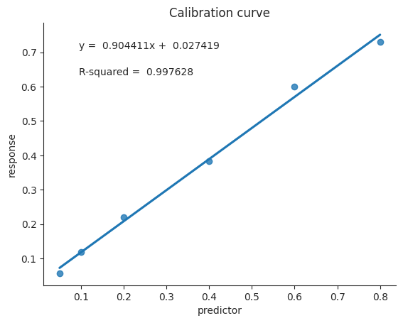

def generate_test_data(slope, intercept):
x = np.linspace(1, 10, num=5)
y = intercept + x * slope
df = pd.DataFrame({'concentration': x, "abs": y})
return df
def generate_sample_data():
x = np.array(['unknown1', 'unknown2'])
y = np.array([13.75, 20.50])
df = pd.DataFrame({'sample': x, "abs": y})
df = df.set_index('sample')
return df
# test_data = generate_test_data(3, 4)
# sample_data = generate_sample_data()
test_data = pd.DataFrame({'concentration': [0.2, 0.05, 0.1, 0.8, 0.6, 0.4], "abs": [0.221, 0.057, 0.119, 0.73, 0.599, 0.383]})
sample_data = pd.DataFrame({'unknown': [0.490, 0.471, 0.484, 0.473, 0.479, 0.492]})core
A class used to create a calibration curve for a given set of data.
Create an instance of the class CalibrationModel by passing in the path to both your calibration data and your sample data. Next specify the name of your response variable and the nummber of test replicates you measured.
/opt/hostedtoolcache/Python/3.9.17/x64/lib/python3.9/site-packages/fastcore/docscrape.py:225: UserWarning: Unknown section Attributes
else: warn(msg)
/opt/hostedtoolcache/Python/3.9.17/x64/lib/python3.9/site-packages/fastcore/docscrape.py:225: UserWarning: Unknown section Methods
else: warn(msg)CalibrationModel
CalibrationModel (x, y)
A class used to create a calibration curve for a given set of data.
…
Tests
Create a calibration model object by passing in the predictor and response data for your calibration curve.
cal = CalibrationModel(x=test_data['concentration'], y=test_data['abs'])Call the fit_model method and the parameters of the fit will be printed to the screen.
cal.fit_model()Calibration curve
R2 = 0.9976282521058687
Slope = 0.9044109330819979
Intercept = 0.027419415645617395The individual parameters can be accessed by selecting the parameter name with dot notation. For example, to access the slope of the calibration curve, use the following code:
cal.slopeprint(f"Slope: {cal.slope}")Slope: 0.9044109330819979Calling the method .linest_stats() will produce a pandas dataframe of the same statistical output you might expect when performing a linest analysis using excel or sheets.
cal.linest_stats()| Slope | Intercept | Uncertainty in slope | Uncertainty in intercept | Standard error of regression | F-statistic | Degrees of freedom | Regression sum of squares | Residual sum of squares | |
|---|---|---|---|---|---|---|---|---|---|
| 0 | 0.904411 | 0.027419 | 0.0312 | 0.017178 | 0.020745 | 840.261133 | 4 | 0.361606 | 0.001721 |
Inverse predictions can be called via the .inverse_prediction method. Call the method and pass a list of values you would like to predict. Note, even if you only have a single sample still pass the sample in a list.
cal.inverse_prediction(sample_data['unknown'])'0.5020733029033536 ± 0.031053583676141718'The .calplot method will plot the calibration curve.
cal.calplot(xlab='predictor', ylab='response')